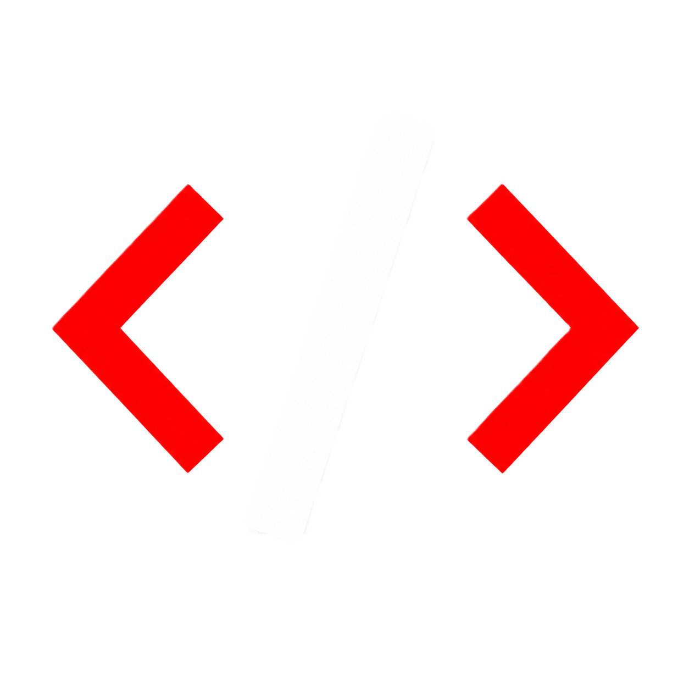

¿IMPORTA
AHORA?
Una necesidad real antecede a cualquier página.

ORBITAL FRAMEWORKSRecorrido comercial
No siempre es un problema de diseño. Primero hay que ubicar dónde se corta el recorrido.
La promesa debe orientar una decisión, no solo ocupar una página.
Diagnóstico
La demanda define si existe una necesidad; la distribución, quién encuentra la página y con qué expectativa.
Una necesidad real antecede a cualquier página.
La promesa debe coincidir con lo que esperaba encontrar.
No es un embudo con resultados medidos: es una forma de ubicar la fricción antes de la visita.
La secuencia
Propuesta, prueba de relevancia y acción deben responder a la misma intención.
El problema se entiende rápido.
La propuesta responde a ese problema.
El siguiente paso es concreto y fácil de iniciar.
Cuando estas respuestas compiten, la conversación se enfría.
Guía práctica
Tres capas para diagnosticar antes de decidir qué mejorar.
¿El problema importa ahora para esa persona?
¿La promesa coincide con lo que buscaba?
¿La acción es concreta y fácil de iniciar?
No cambies todo a la vez: identifica primero dónde se pierde la intención.
Antes de intervenir
Identifica primero el punto donde se pierde la intención. Después decide qué mejorar.